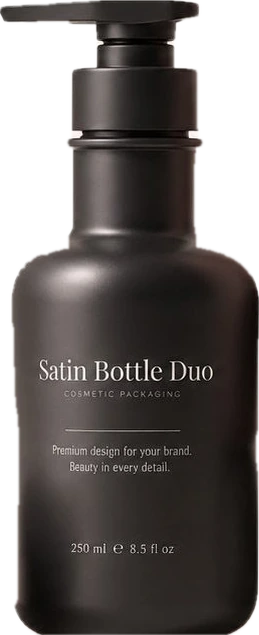
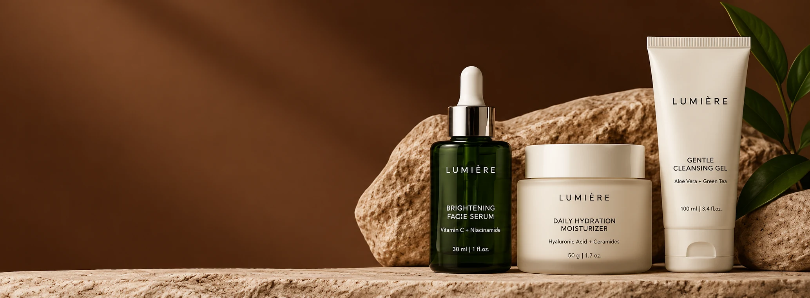

Tratamentos faciais e corporais na Clínica
de Estética Avançada Taisa Rissoli.
5,0 (3 avaliações no Google)
Cada procedimento é planejado com
atenção às necessidades da sua pele.
Do rejuvenescimento do rosto
ao tratamento de celulite,
em um só lugar.

O depoimento real de uma paciente,
nas palavras dela, entra aqui. Troque este
texto por um relato autorizado.

No dia a dia
Simplifique sua rotina com cuidados
essenciais, pensados para a sua pele.